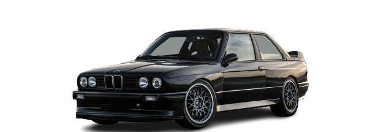
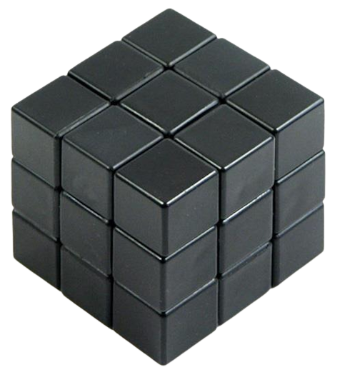
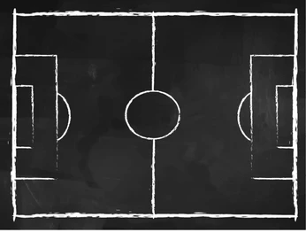
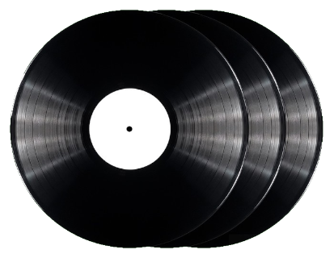

Moje zainteresowania
Motoryzacja
Motoryzacją interesowałem się od dzieciaka. Fascynowały mnie nowe szybkie super samochody i ich osiągi. W ostatnim czasie bardziej zainteresowałem się starszą motoryzacją z lat 80' i 90', głównie Japońską i Niemiecką. Ale także nowsze samochody nie są mi obce. Spodobała mi się stylistyka samochodów z tamtych czasów oraz prostota ich budowy oraz tworzenie samochodów stricte dla kierowcy oferujących sportowe doznania w dużo tańszych produkcyjnie cenach. Aktualnie uczę się budowy samochodów, wymiany podstawowych części ekspoatacyjnych. Planuje kiedyś zakupić klasyczne auto i je odrestaurować

Kostka rubika

Kostką rubika interesuję się od 4 lat. Początkowo chciałem po prostu ją ułożyć, co za pierwszym razem zajęło dużo czasu i to z pomocą poradników z internetu. Z czasem nauczyłem się układać ją samemu bez pomocy ściąg algorytmów potrzebnych do ułożenia kostki. Ułożenie zajmowało mi parę minut. Metoda LBL (czyli z angielskiego warstwa po warstwie) skrywała przede mną jeszcze wiele tajemnic. Nowe algorytmy skracające czas ułożeń oraz nauka podstawowych finger trick'ów zajęła mi parę miesięcy. Po tym czasie skróciłem średni czas ułożenia do 30 sekund a nawet ułożenia poniżej 25 sekund się zdarzały. Później zainteresowałem się metodą układania zwaną CFOP lub Fridrich, z której korzystają profesjonalni speedcuberzy. CFOP w odróżnieniu od LBL skraca ilość etapów ułożenia do 4 kroków: C - Cross (Krzyż), F - F2l (Ułożenie w jednym momencie 2 warstw kostki), O - OLL (Orientacja ostatniej wartwy), P - PLL (Permutacja ostatniej warstwy). Metoda wykorzystuje znacznie więcej algorytmów, aż 78! Akutualnie znam większość z nich ale na tym nauka nie poprzestaje. Obecnie moja średnia z 5 ułożeń to około 14 sekund, a moje najlepsze ułożenie to 8 sekund
Piłka nożna
Piłką nożną także interesuję się od małego. Jak większość chłopaków w moim wieku dużo czasu spędzałem na boisku trenując nowe techniki. Miałem także krótki epizod gry w pobliskim klubie piłkarskim. Obecnie nie gram już ale za to z chęcią oglądam mecze piłkarskie. Znam większość drużyn oraz dużą ilość piłkarzy. Głównie z ligi angielskiej, niemieckiej, franuskiej, hiszpańskiej oraz włoskiej. Kibicuje FC Barcelonie od dawnych lat, miałem także okazję zwiedzić ich stadion, poznać tam dokładniejszą historię klubu. Odwiedziliśmy muzeum klubu gdzie wystawione były wszystkie zdobyte trofea. A także znalazła się chwila na zakupy w sklepie na camp nou

Muzyka

Muzyka towarzyszy mi codziennie. Za małego była to głównie muzyka popowa puszczana z radia. Z czasem przez mojego brata zainteresowałem się bardziej muzyką hip-hopową. Aktualnie słucham wielu gatunków: hip-hop, rap, trap, phonk, oraz zdarzają się piosenki popowe. Moimi ulubionymi wykonawcami są: Paktofonika, Gibbs, Kacper HTA, Włodi oraz B.R.O
Copyright © 2022 Dawid Halamoda